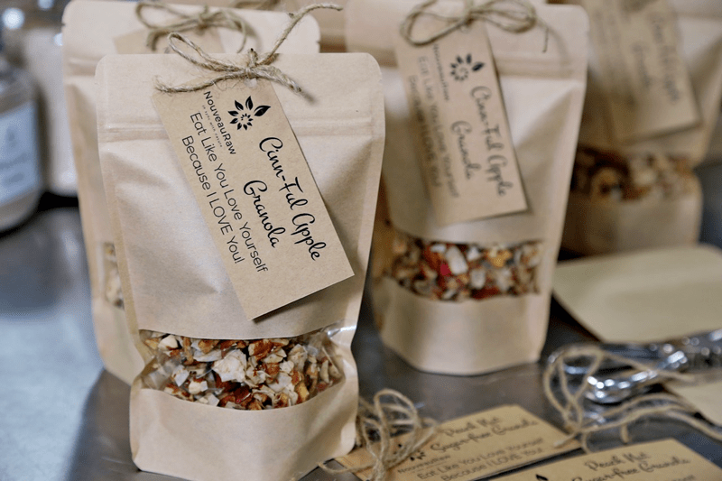

Cinn-Ful Apple Granola
raw / grain-free / dairy-free / Paleo
Not too long ago a dear friend of mine purchased a bag of granola from the local grocery store. It wasn’t long afterward she had me try it and asked if I could make a raw version. It is rare that I turn down a challenge, so I accepted, and with great confidence, I felt sure I would soon have a new recipe to share not only with her but also with you. So, I scooted home, and with barely any hesitancy, I whipped up a batch. Much to my delight, I nailed it on my first attempt. Since then, I have made eight batches to keep up with the demands of my nearby loved ones.
To further the tastebud testing… I made several batches for the three-day retreat that I catered. Since I didn’t know any of the ladies attending and being unaware of their food likes and dislikes I created some alternative ways to enjoy it. First, I set out a container of the granola to be enjoyed as a cereal, served with fresh “squeezed” almond milk and fresh fruit to garnish the top. If this wasn’t their thing, they could enjoy the granola sprinkled over a bowl of homemade raw coconut yogurt, again with fresh fruit as a topping if desired.
Or they could just enjoy the granola alone, the yogurt alone, or the fresh fruit alone… so many options with so few ingredients. In the end, the granola was loved in all its forms and fashions. One gal told me that she doesn’t like coconut at all, BUT she loved the coconut yogurt and the granola… both of which have coconut in them. Love it when that happens.
Another way that I tested this recipe was to enjoy it as a cereal before dehydrating it. It was amazing! (as shown in photos above) I found it interesting how it tasted so different from the dehydrated version but in a good way. So as you can see, there are so many wonderful ways to enjoy this recipe.
If you are vegan, you can substitute maple syrup or any other liquid sweetener that you like for the honey. I have tested honey, maple syrup, and a mix of raw agave with coconut nectar. All were amazing. Each different sweetener will alter the flavor, but only in a small way. I did find the raw honey much thicker and sticker to work with, but it was doable. I hope you found some inspiration to shuttle yourself into the kitchen to make this. Please leave a comment below. blessings, amie sue
Ingredients
- 2 cups (280 g) almonds, soaked
- 2 cups (100 g) unsweetened, dried coconut flakes
- 1 cup (100 g) pecans, soaked
- 1 tsp (6 g) Himalayan salt
- 1/2 tsp (1 g) Allspice
- 1/4 tsp (1 g) ground Cardamom
- 1/4 tsp (1 g) ground Nutmeg
- 1/4 tsp (1 g) ground Ginger
- 3 cups (390 g) diced apples
- 1/4 cup (76 g) raw honey
Preparation
- In the food processor fitted with the “S” blade, give the almond and pecan a few quick pulses… just enough to break them down.
- We don’t want them too small because we want a nice hardy texture. Pour into a large mixing bowl.
- Add the coconut flakes, salt, Allspice, cardamom, nutmeg, ginger, and diced apples. Mix well with your hands to make sure everything gets well mixed.
- Now add the sweetener, mixing really well. Again, I recommend using your hands for the security of knowing all ingredients were well coated. Plus, there is something grounding about working with your hands.
Dehydrate:
- Line the dehydrator sheets with non-stick sheets.
- Loosely spread the mixture on the sheets.
- Do not have it any thicker than 1″ or the dry time will increase.
- Dehydrate at 145 degrees (F) for 1 hour, then reduce to 115 degrees (F) for 10+ hours, until completely dry.
- Dry time will vary based on the climate, humidity, how thick the batter is spread out, etc. So use the dry time as a guideline.
- Be sure all the moisture is removed to increase shelf-life.
Storage:
- Store in airtight mason jars for 2-3 weeks or so.
- Store in the freezer for up to 3 months.
Usage (recap)
- Granola snack
- Cereal with milk
- Topping for yogurt
Culinary Explanations:
- Why do I start the dehydrator at 145 degrees (F)? Click (here) to learn the reason behind this.
- When working with fresh ingredients, it is important to taste test as you build a recipe. Learn why (here).
- Don’t own a dehydrator? Learn how to use your oven (here). I do however truly believe that it is a worthwhile investment. Click (here) to learn what I use.

I made up some bags for a friend of mine who was heading out on a LONG road trip. She needed “fuel” for the drive.
© AmieSue.com